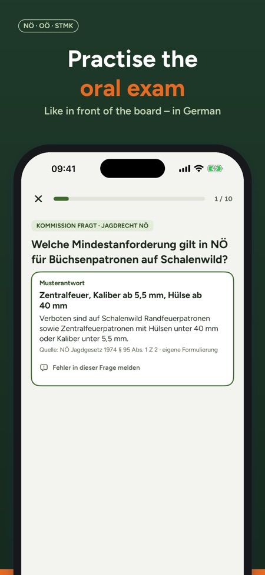
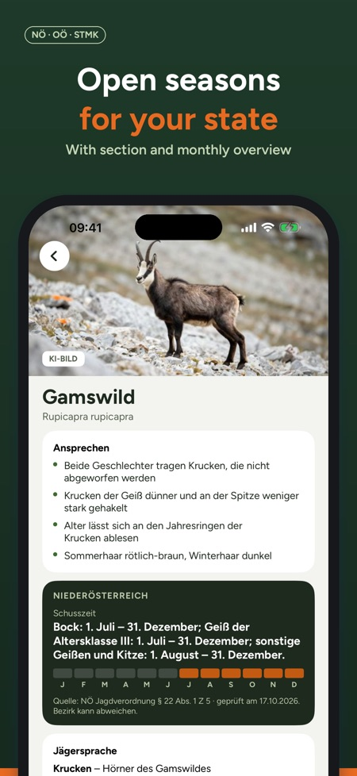
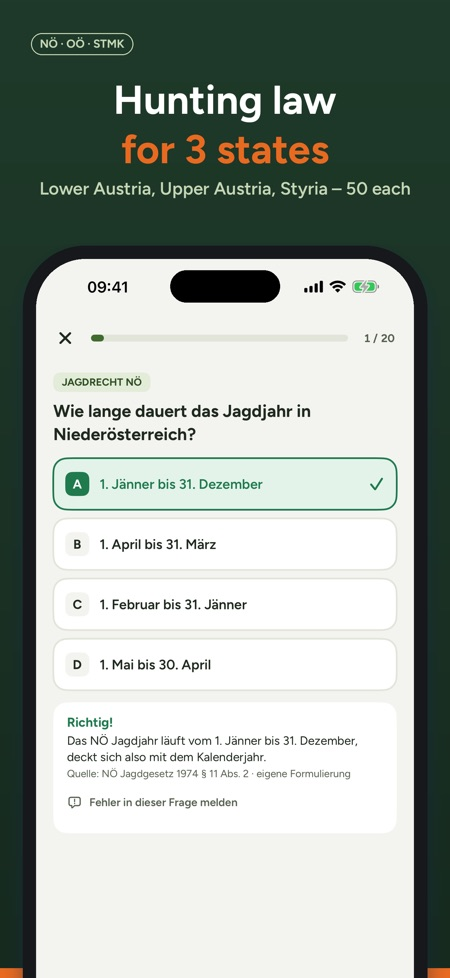

Jungjägerprüfung & Jagdkurs. Austrian hunting exam: practise the oral exam with your state's hunting law, open seasons and game species. Lower Austria, Upper Austria, Styria. In German.



Practise the Austrian hunting exam (Jagdprüfung) for your hunting licence (Jagdkarte) like in front of the examination board – with your state's hunting law and open seasons. For Lower Austria, Upper Austria and Styria.
Please note: the app is in German, like the exam itself. It covers Austrian hunting law only and is not suitable for the German Jägerprüfung.
THE ORAL EXAM
- In Lower Austria, Upper Austria and Styria the theory is examined orally in front of a board
- Open questions across all topics, your state's hunting law first
- Answer out loud, reveal the model answer with its source, rate yourself – what you didn't know goes to "Meine Fehler"
YOUR STATE'S HUNTING LAW
- 400 questions per state with explanation and source, 50 of them on your state's hunting act
- Plus wildlife, ecology and game management, firearms and ballistics, hunting practice, hunting dogs, game meat hygiene, nature conservation and first aid
- Progress per topic and exam readiness at a glance
- Exam simulation with 40 questions in 60 minutes – modelled on the exam content, not an official format
GAME SPECIES AND OPEN SEASONS
- 50 game species, including chamois, ibex, marmot and capercaillie, with identification features, hunting terms and habitat
- Open seasons for your state with paragraph, check date and monthly overview
- Picture questions: recognise tracks and species – with our own drawings
FROM HUNTING COURSE TO HUNTING LICENCE
- Exam parts, costs, registration and tips for the oral exam – with sources
- Enter your exam date: reminders 30, 14, 7 and 1 day before (only on your device)
BUY ONCE, NO SUBSCRIPTION
Try 30 questions, one simulation, one oral round and 10 game species before buying. The full version unlocks all questions, simulations and species for all states, with Family Sharing. Works offline, in light and dark mode.
More states will follow.
Note: Jagdprüfung Österreich is an independent study app and is not affiliated with the state hunting associations or any authority. All questions are written by us with a source; no guarantee.